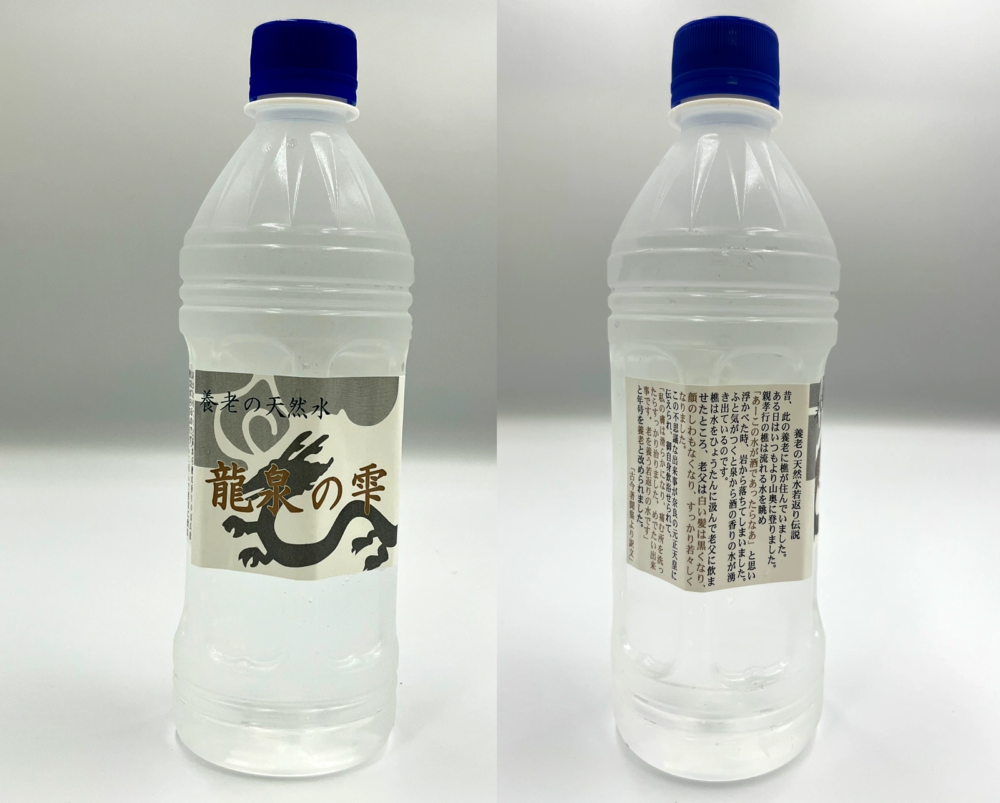
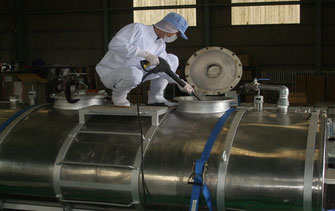
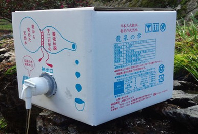
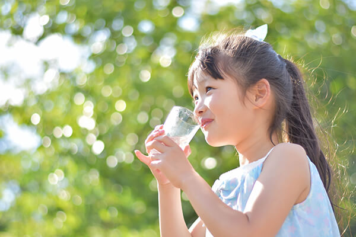
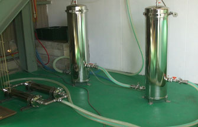
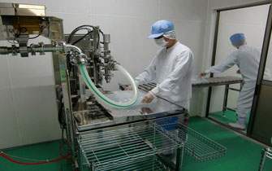
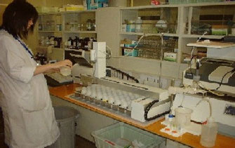

OUR STORY




QUALITY
自然の恵みを、毎日安心して飲める品質へ。各工程で丁寧に確認を重ねています。



FAQ
すっきりとしていて、食事にも合わせやすいまろやかな飲み心地です。毎日の飲用水として続けやすい味わいです。
クセが少ないため、飲み水だけでなく料理やお茶、コーヒーにも合わせやすい天然水です。
ペットボトルや大容量タイプなど、用途に合わせてご相談いただけます。備蓄用としても使いやすい商品があります。
数量、配送先、利用頻度に応じてご案内します。オフィス、施設、イベント用途などもご相談ください。
直射日光や高温多湿を避け、清潔な場所で保管してください。開封後はできるだけ早めにお飲みください。
希望商品、数量、配送先エリア、利用頻度が分かると、よりスムーズにご案内できます。
COMPANY
CONTACT
ご家庭、オフィス、法人利用まで、用途に合わせてご案内します。